5 Uniformly accelerated motion along a line¶
5.1 Describing uniformly accelerated motion¶
An important special case of non-uniform motion along a line is that which arises when an object is subjected to constant acceleration. This kind of motion is called uniformly accelerated motion. An object falling under gravity near to the surface of the Earth, such as the apple of Figure 24, provides an approximate realisation of such motion. (Air resistance, which increases with speed, prevents the acceleration from being truly constant in such cases.) A more precise realisation of uniformly accelerated motion is provided by an object falling under gravity close to the surface of an airless body such as the Moon (see Figure 38) or by a falling object in an evacuated (i.e. airless) drop-tower or drop-shaft of the kind discussed in Section 1 of this course.

Figure 38: The acceleration-time graph for an object with constant (positive) acceleration
The acceleration-time graph for a uniformly accelerated body is simple; it’s just a horizontal line of the kind shown in Figure 38. The value of this constant acceleration (which may be positive or negative) represents the gradient of the velocity-time graph at any moment. It follows that the velocity-time graph must have the same gradient at all points and must therefore be a straight line of the kind shown in Figure 39. Note that the sign of the acceleration determines whether the velocity-time graph slopes up or down, and the value of the acceleration determines the precise value of the gradient. However, the acceleration does not determine the initial value of vx so we have arbitrarily chosen a point on the vx-axis to represent this value and labelled it ux. From Figure 38, we deduce that if

then
where ax represents the constant value of ax(t).
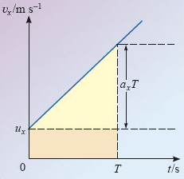
Figure 39: A velocity-time graph that is consistent with the acceleration-time graph of Figure 38. Note that the intercept has been chosen arbitrarily; only the gradient is determined by the acceleration
It’s rather more difficult to deduce the position-time graph that corresponds to uniformly accelerated motion, but the steady change of velocity with time certainly implies that the gradient of the position-time graph must also change steadily with time. In fact, given a velocity-time graph like that in Figure 39, the corresponding position-time graph will be of the general form shown in Figure 40.

Figure 40: A position-time graph that is consistent with the acceleration-time graph of Figure 38 and the velocity-time graph of Figure 39. Note that the intercept has been chosen arbitrarily; only the gradient is determined by velocity
Once again, the intercept with the vertical axis (representing the initial position at t = 0) is not determined by anything we have said so far; it has therefore been chosen arbitrarily and labelled x0. The curve however is not arbitrary since the displacement from x0 at any particular time t = T is determined by the area under the velocity-time graph between t = 0 and t = T. That area will be the sum of two parts, a rectangle of height ux and base length T, and a triangle of height axT and base length T. Since the area of a triangle is half the product of its height and its base length, it follows that the displacement from x0 at time T will be

and the position of the uniformly accelerating particle, at any time t, will be x(t) = x0 + sx(t), that is

Equations 19, 20 and 21 provide an essentially complete description of uniformly accelerated motion in one dimension and have many applications. They are not the most common form of the equations of uniform acceleration. We will discuss those in the next subsection, but before doing so let’s use the method of differentiation to confirm the consistency of the equations we have deduced.
Starting from Equation 21, the right-hand side of which is a quadratic function of t, we expect to find that

Using the rules and results of Table 6 to carry out the differentiation (which is just like that in Question 18) we find that

in complete agreement with Equation 20. Similarly, differentiating the linear function that appears on the right-hand side of Equation 20, we expect to find
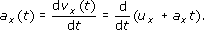
Again, performing the differentiation, using Table 6, confirms our expectations:

We see that in this case, ax(t) is just the constant acceleration ax from which we started.
This short exercise in checking consistency gives just a hint of the immense power of differentiation to simplify a wide range of tasks and investigations.
Returning now to the description of uniformly accelerated motion, let’s gather together our results so far:


These are the equations we shall use, rearrange and extend in the next subsection.
5.2 The equations of uniformly accelerated motion¶
Equations 22, 23 and 24 provide a complete description of uniformly accelerated motion. By combining them appropriately, it is possible to solve a wide class of problems concerning the kinematics of uniformly accelerated motion. Nonetheless, those particular equations are not always the best starting point for the most common problems. For example, it is often the case that we want to know the displacement from the initial position after some specified period of constant acceleration, rather than the final position x. In such circumstances it is useful to subtract x0 from both sides of Equation 22 and use the definition sx = x − x0 to write the resulting equation as
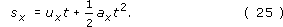
More significantly, it is often the case that we need to find the final velocity vx when all we are given is the (constant) acceleration ax, the initial velocity ux and the displacement sx. The problem can be solved using Equations 23 and 25, but doing so involves finding the duration of the motion t, which is not required as part of the answer. It would be more convenient to use an equation that related vx to ax, ux and sx directly, thus avoiding the need to work out t altogether. Fortunately, it is possible to find such an equation by using a standard mathematical procedure called elimination.
The first step in the process is to identify a set of equations that contain the variables we want to relate, along with at least one variable we can eliminate. In this case we want to eliminate t from Equations 23 and 25. The second step usually involves rearranging one of the equations so that the unwanted variable is isolated on the left-hand side, thus becoming the subject of that equation. In this case, we can subtract ux from both sides of Equation 23, divide both sides by ax and then interchange the two sides to give

Having obtained this relation from one of the equations, the third step is to use it to eliminate the unwanted variable from all the other equations. In our case this means replacing t by (vx − ux)/ax throughout Equation 25, so we obtain
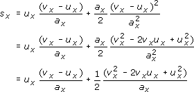
so after a little algebra, we obtain
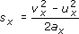
which can be rearranged to give the result

Equations 23, 25 and 27 are the most frequently used equations of uniformly accelerated motion and are usually referred to collectively as the constant acceleration equations (or the uniform acceleration equations).
Constant (or uniform) acceleration equations

It follows from these equations that
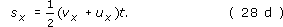
Remember, these are not universal equations that describe every form of motion. They apply only to situations in which the acceleration ax is constant.
Question 20¶
Question¶
Starting from the constant acceleration equations, use the elimination procedure to derive Equation 28d.
Answer¶
In this case we wish to eliminate ax from Equations 28a and 28b. One way is to rearrange Equation 28b (subtracting ux from both sides and dividing both sides by t) to obtain:

Substituting this into Equation 28a gives

Question 21¶
Question¶
Give a graphical interpretation of Equation 28d in terms of the area under a velocity-time graph for the case of uniformly accelerated motion.
Answer¶
Graphically, sx is the signed area under the velocity-time graph between the given times. In this case those times are t = 0 when the initial velocity is ux and some later time t when the velocity is vx. Since the velocity-time graph for uniformly accelerated motion is a straight line of fixed gradient, the area required will always be either a trapezium (above or below the axis) or a pair of triangles. (Figure 37 shows a particular case.)

Figure 37: The velocity-time graph for Self-assessment question 19
Question 22¶
Question¶
An object has a final velocity of 30.0 m s−1, after accelerating uniformly at 2.00 m s−2 over a displacement of 20.0 m. (a) What was the initial speed of the object? (b) For how long was the object accelerated?
Answer¶
In this case we know sx = 20 m, vx = 30 m s−1 and ax = 2 m s−2, and we need to find ux. As a first step we should make ux the subject of an equation that involves the known quantities. Rearranging Equation 28c gives
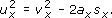
Taking the square root of each side

Substituting the given values,

The duration of the acceleration is given by Equation 26 as t = (vx − ux)/ax, which was itself obtained by rearranging constant acceleration equations. Substituting the relevant values gives

Question 23¶
Question¶
A train accelerates uniformly along a straight track at 2.00 m s−2 from an initial velocity of 4.00 m s−1 to a final velocity of 16.00 m s−1. What is the train’s displacement from its initial position at the end of this interval?
Answer¶
Using Equation 28c
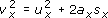
with ux = 4.00 m s−1, vx = 16.0 m s−1 and ax = 2.00 m s−2, we obtain, after rearranging
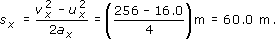
5.3 The acceleration due to gravity¶
In the absence of air resistance, an object falling freely under the influence of the Earth’s gravity, close to the surface of the Earth, experiences an acceleration of about 9.81 m s−2 in the downward direction. The precise value of the magnitude is indicated by the symbol g and varies slightly from place to place due to variations in surface altitude, the effect of the Earth’s rotation and variations in the internal composition of the Earth. Some typical values for the magnitude of the acceleration due to gravity, g, at various points on the Earth’s surface, are given in Table 7.
Incidentally, one of the reasons that the value of g is well known across much of the Earth’s surface is that extensive surveys have been carried out in which g has been accurately measured by timing the swing of very carefully constructed pendulums.
Location | g/m s−2 |
|---|---|
North Pole | 9.83 |
London | 9.81 |
New York | 9.80 |
Equator | 9.78 |
Sydney | 9.80 |
5.4 Drop-towers revisited¶
In Section 1 we described how research into near weightless conditions can be carried out on Earth by using a drop-tower or a drop-shaft (Figure 41). We are now in a position to examine drop-shafts in more detail (Example 3).

Figure 41: The test vehicle at the Bremen drop-tower
Example 3¶
Question¶
Consider a vertical shaft of total length 700 m, with free fall taking place for the first 500 m and constant deceleration for the final 200 m. Work out:
The time to fall the first 500 m. (This would be the time during which near weightless experiments could be done.)
The velocity at the end of the first 500 m.
The acceleration needed to reduce the velocity to zero at the bottom of the shaft.
Answer¶
It is convenient to split the calculations into three corresponding parts.
Part 1: Finding the time to fall the first 500 m
When carrying out calculations it is always wise to choose a coordinate system that fits the problem. In this case it seems natural to choose an x-axis that points down the shaft, so that downward displacements and velocities will be positive and the acceleration due to gravity will be ax = + g. It is also sensible to use the equations that lead to the least amount of work. In this case, we know only the initial velocity (assuming the object is initially at rest), the acceleration (g) and the final displacement (500 m). So, in order to work out the time to fall, the best approach is to use Equation 28a
with sx = 500 m, ux = 0 m s−1 and ax = g = 9.81 m s−2. Setting ux = 0 m s−1 and rearranging Equation 28a we obtain
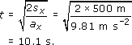
Part 2: Finding the velocity at the end of the first 500 m
To calculate the velocity after a free fall of 500 m, there are two convenient methods. We could either use
with ux = 0 m s−1, ax = g = 9.81 m s−2 and t = 10.1 s, or
with ux = 0 m s−1, ax = g = 9.81 m s−2 and sx = 500 m.
We choose the second method since it uses only values that we have been given rather than ones we have calculated. (It is always possible that we made some slip in our calculation.) So using Equation 28c with ux = 0 m s−1, we obtain

Part 3: Finding the acceleration over the final 200 m
To find the uniform acceleration necessary to bring the object to rest at the bottom of the shaft we can again make use of Equation 28c. This time, the quantity ax is what we want to calculate and the known parameters are vx = 0 m s−1, ux = 99.0 m s−1 and sx = 200 m. Substituting vx = 0 m s−1 and rearranging Equation 28c gives

Question 24¶
Question¶
Consider the following proposal to roughly double the period of weightlessness in the 140 m Bremen drop-tower. The basic idea is that the drop-vehicle should be launched from the bottom of the tower with just the right velocity to enable it to reach the top of the tower with zero velocity. If the vehicle is uniformly accelerated over the first 10 m to give it the necessary upward velocity it can then rise freely for the remaining 130 m, pass through its highest point, and fall freely for another 130 m before being brought to rest over the final 10 m of its descent. Using a coordinate system in which the upward direction is positive, answer the following questions.
What must be the launch velocity of the vehicle if it is to freely rise 130 m?
What constant total acceleration must be applied over the first 10 m if the vehicle is to attain the required launch velocity? How long will this last?
How long will the vehicle actually spend in free motion?
What will be the acceleration of the vehicle when at its highest point?
What will be the displacement of the vehicle from its starting point when it returns to that point at the end of the trip, and through what distance will it have travelled during the round trip?
Sketch a rough acceleration-time graph for the entire motion, and briefly comment on the feasibility of the whole proposal.
Answer¶
Using a coordinate system in which up is the positive direction means that the acceleration due to gravity will be negative, that is ax = −g. With vx = 0 m s−1 and sx = 130 m, the initial velocity will be given (as in Question 22) by
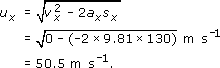
In this case we know ux = 0 m s−1, vx = 50.5 m s−1 and sx = 10.0 m. (Note that what was an initial velocity in the last part of the question has become a final velocity in this part.) Rearranging Equation 28c and substituting the given values
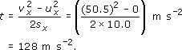
To find the duration of the acceleration rearrange Equation 28b

The time in free motion is given by Equation 26 with ux = 50.5 m s−1, vx = −50.5 m s−1 and ax = −9.81 m s−2

(Pay attention to signs here, remember that up is positive so the initial velocity will be positive, but the final velocity will be negative.)
When at its highest point the acceleration of the vehicle will be ax = −g. (The fact that the vehicle’s velocity is momentarily zero as it passes through the highest point does not affect the (constant) acceleration.)
When the particle returns to its starting point its displacement from that point will be zero. The distance travelled, however, will be twice the height of the tower, 280 m.
The acceleration-time graph is given in Figure 42. Note that the initial and final accelerations are both positive because both increase the vehicle’s velocity, even though the final acceleration reduces the vehicle’s speed. (This subtlety concerning acceleration was discussed in Section 4.2.) The plan is feasible. In fact a similar system is in use at various drop-towers and drop-shafts.
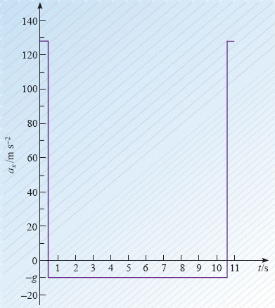
Figure 42: The acceleration-time graph for Question 24(f)